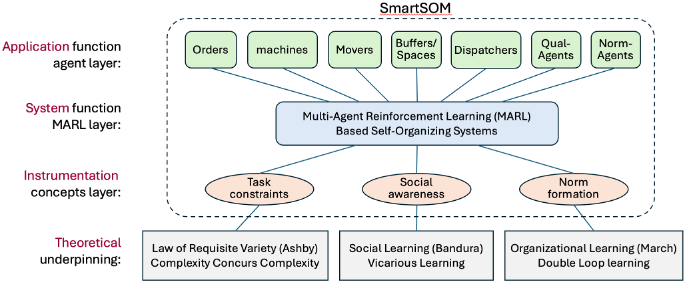
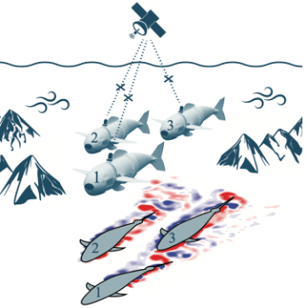
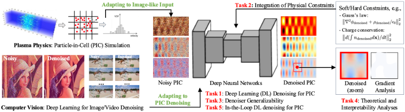
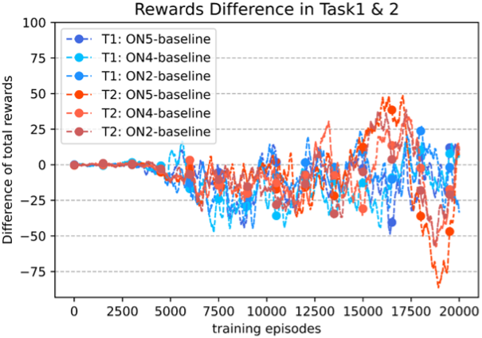
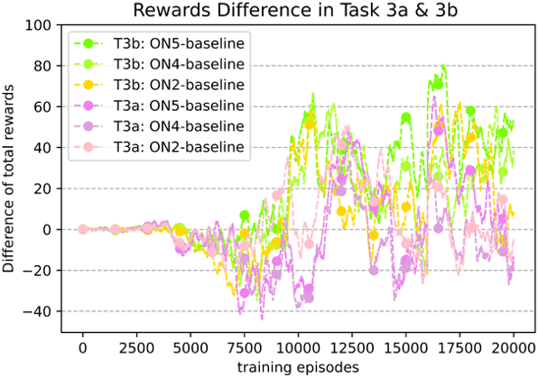

Research & Projects
SmartSOM — Self-Organizing Manufacturing System Design
Modern products, from personalized prosthetics to on-demand electronics, are increasingly customized, yet most factories still rely on rigid, centralized control that is hard to adapt. SmartSOM designs self-organizing manufacturing systems where machines, robots, and agents learn, collaborate, and adapt in real time — integrating multi-agent reinforcement learning, social and organizational learning, intelligent system design, and robotics validation. The goal is manufacturing that self-organizes, self-configures, self-heals, and self-optimizes under changing recipes, uncertain demand, and heterogeneous resources.

TrustAI — Building Trust in Human-AI Robotics Teaming
As AI becomes integral to manufacturing and logistics, effective human-AI teaming is essential to the future of industry. Trust is a key factor in successful human-AI collaboration, yet it remains difficult to model and quantify. This project builds simulated human-AI collaboration environments and investigates how trust can be modeled, measured, and designed into human-robot teams for manufacturing tasks. The goal is to translate “trust” — an abstract human factor — into concrete engineering principles for reliable human-AI robotic systems. Built in NVIDIA Isaac Sim and Isaac Lab.
Physics-Informed RL for Fluid Dynamics
Fish-inspired autonomous underwater vehicle (AUV) swarms operate amid unsteady vortex dynamics, nonlinear fluid–body interactions, and limited sensing. Rather than hand-coding fluid laws into rules, this project uses experimentally grounded multi-agent reinforcement learning to study how AUV swarms learn to perceive, adapt to, and exploit surrounding fluid dynamics — improving navigation efficiency, coordination, and energy use.

Physics-Constrained Denoising for Plasma Simulation
Statistical noise obscures the physics in fully kinetic plasma simulations, which are costly to run at high fidelity, and traditional denoising must be hand-tuned and can distort the physics. This project develops a physics-constrained deep-learning denoising framework that treats particle-in-cell data as image- and video-like fields, using modern computer-vision architectures to reconstruct high-fidelity results from fast, low-cost, noisy simulations while preserving physical consistency.

Social Learning in Self-Organized Systems
This project investigates how autonomous agents learn socially — sharing knowledge and coordinating in complex multi-agent tasks. Instead of fixed rules or isolated learning, a social-learning framework lets agents learn from both environmental feedback and the behavior of other agents, differentiating roles and developing shared norms without centralized control. Validated on cooperative assembly and object-manipulation tasks, it improves learning efficiency and performance as complexity and team size grow, while mapping the trade-offs among social information, computational cost, and scalability.

